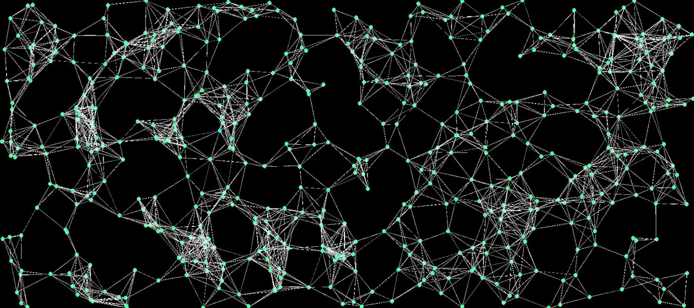
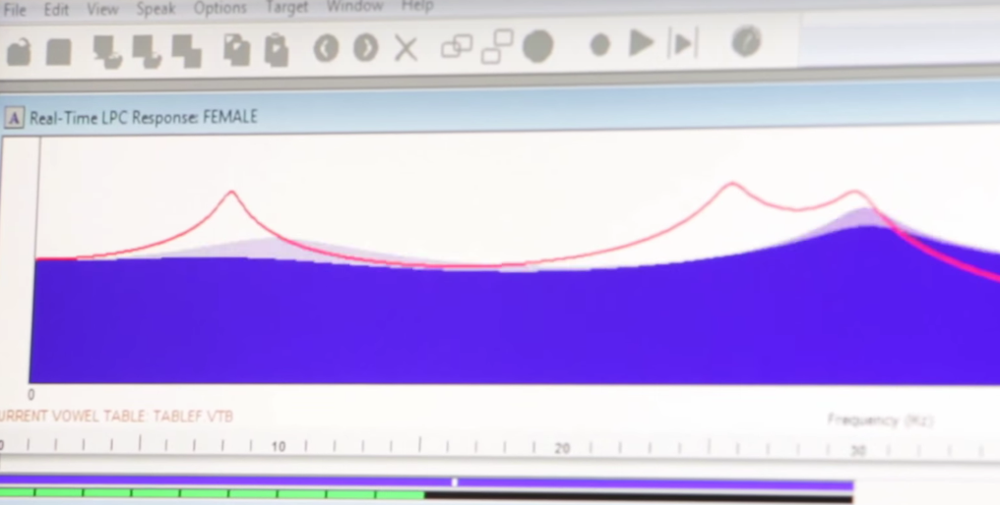

Our Work
Recent projects completed
for our fabulous clients

p5.speech
Branding, Design, Strategy*An open-source extension to the p5.js creative coding platform to allow for easy access to HTML5 Audio Speech Synthesis and WebKit Speech Recognition.
Kinect + Stroke Rehab
iOS / Android Development, MarketingA project with NYU’s Hospital for Joint Disease that incorporates the Microsoft Kinect’s joint detection in game-play developed from adapted stroke rehab exercises.

Processing and P5.js and Accessible Code Learning
iOS Development, UI / UX Design, StrategyA study of learning and coding for people with low-vision and blindness. This project incorporates an analysis of existing code learning platforms, stakeholder/expert interviews and a proposed accessibility redesign of Processing.org and P5JS.org learning modules and IDEs.

Biofeedback for /r/ sounds:
Web Design, Branding & IdentityResearchers at the Byun Lab at NYU are studying the way biofeedback–in this case real-time visual feedback about a user’s vocalizations–can help users correct atypical speech patterns that are otherwise difficult to perceive. Students in the Ability Lab are working with the Byun Lab to create an app that give this real-time biofeedback.
Umbrella for motorized wheelchair users:
iOS Development, UI / UX Design, StrategyNYU graduate students in collaboration with clients at United Cerebral Palsy of New York City are designing a fully accessible and collapsable umbrella for motorized wheelchair users—a product which is not already available on the market, despite an obvious and frequently cited need for it.
Music player for practicing fine motor skills
iOS Development, UI / UX Design, StrategyIn collaboration with the Adaptive Design Association, NYU graduate students developed a music player that incentivizes practicing fine motor skills. Information about how to download the app and detailed DIY instructions can be found on Instructables.

Sensory room for school for children with hearing loss:
Web Design, Branding & IdentityIn collaboration with the auditory oral school of NY, graduate students are developing elements for a sensory room and music room for young children. The current project under development is a game to help the children with cochlear implants develop balance. The game is being created using Unity and Kinect.
Potential Projects
Recent projects completed
for our fabulous clients
- Interactive Balance and Mobility Game (Strivright)
- Sensory Room Items (Strivright)
- StaRt (NYU CSD)
- Tech for People with Mild Concussion (Keledy Kenkel)
- Speech to Text App for people who are Deaf (Melina- in Buenos Aires)
- Mechanism for holding/using phone (Frances)
- Mechanism for holding/using tablet for reading (Frances)
- Mechanism for holding/using tablet for reading (Frances)
- Wheelchair re-righting system (Matt Welt)
- Just Move It (Lirong Liu)- either separate or as part of interactive balance and mobility game
- Tell Us Abey– updating and adapting communication device for child with severe mobility limitations and inability to speak. (family)
- Color blindness solutions for classroom learning/presentation accessibility (Cassidy)